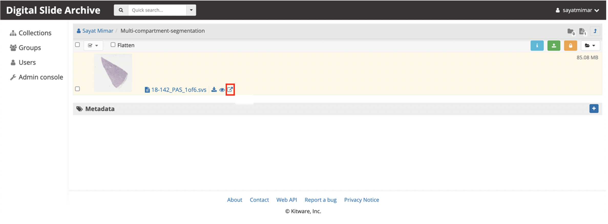
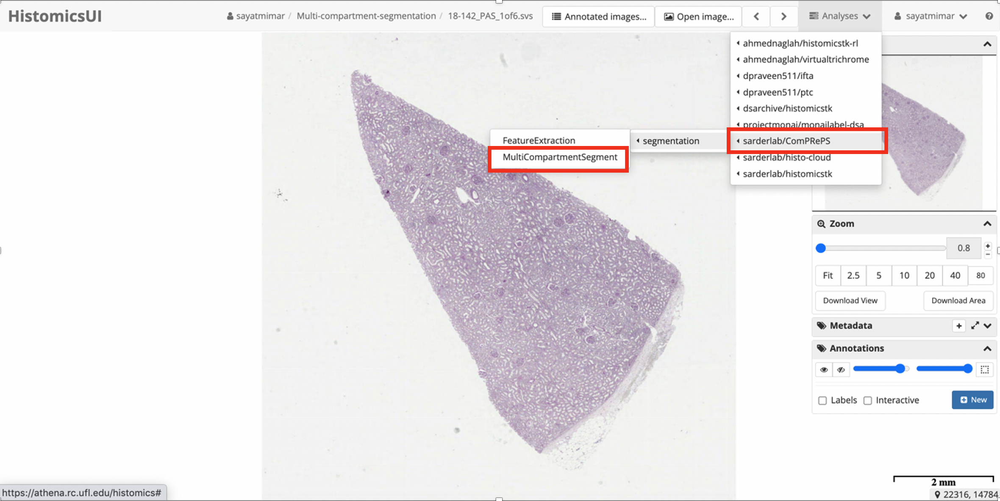
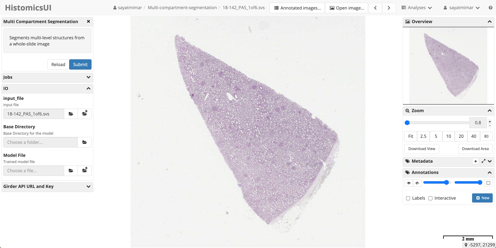

Plugins
- Multi Compartment Segmentation
- IFTA and glomerulosclerosis Segmentation
- PTC Segmentation
- Spot Segmentation
- Feature Extraction
Model Zoo
Multi Compartment Segmentation
Multi compartment segmentation is a detectron2 based panoptic segmentation model that is implemented as a pipeline in Digital Slide Archive(DSA) developed and maintained by CMI lab at the University of Florida. This DSA plugin allows users to segment a kidney Whole Slide Image (WSI) into 6 compartments, namely: cortical interstitium, medullary interstitium, non-sclerotic glomerulus, sclerotic glomerulus, tubule, and artery/arteriole.
- Create an account at DSA and log in with your credentials.
- Upload a WSI in a folder either under the Collections tab or in your User directory.
- Open the image in HistomicsUI by clicking the arrow icon: 
- From Analyses tab on the top right in HistomicsUI select: sarderlab/ComPRePS/segmentation/MultiCompartmentSegment. 
- Populate the fields in the tab that appears on the left side of the page: Select the Base Directory as the directory where your WSI is located and select the Model File from the Collections/models/segmentation_models/Multi_compartment_model with an available pre train model and click Sumbit botton. 
- Once the job sucessfuly runs, the segmented compartments will appear on top of the image. You can visuazlie them all or one-by-one by selecting the layers you wish to view from Annotations/Other tab on the right.
IFTA and glomerulosclerosis Segmentation
This github repo contains information on accessing the shared materials for the JASN manuscript entitled "Automated Computational Detection of Interstitial Fibrosis, Tubular Atrophy, and Glomerulosclerosis", submitted to JASN in November 2020. Shared materials include a pre-trained CNN model and corresponding codes to perform whole slide segmentation of IFTA and glomerulosclerosis on new renal biopsies. Also included are example whole slide images and their CNN segmented output.
To view the CNN segmentation on whole slide images, you must have Aperio ImageScope installed on your computer. Then, simply place the whole slide image (.svs file) and its corresponding annotations (.xml file) in the same directory on your computer. Upon opening the .svs file with ImageScope, you will see the CNN predictions overlaid on the whole slide. We provide some example pre-generated segmentations on whole slide images here. These segmentation outputs were morphologically post-processed to remove IFTA regions with size < 1730µm2 glomerular regions with size < 1500µm2 from the whole slide mask.
PTC Segmentation
Peritubular capillary (PTC) segmentation is a computational image analysis plugin designed to quantify various attributes of PTCs from kidney biopsies. This plugin enables the extraction of new information from whole-slide images (WSIs) with potential clinical relevance. PTC density, size, and shape are among the attributes analyzed, offering insights into kidney microvasculature status and disease progression.
Feature Extraction
Feature extraction is a pivotal aspect of histopathological analysis, especially in the study of kidney morphology. Utilizing whole slide imaging (WSI) and advanced deep learning (DL) techniques, this study focuses on quantifying key histomorphometric parameters from kidney tissue sections. By developing a robust panoptic segmentation neural network, we accurately identified and segmented critical kidney structures, including glomeruli, tubules, and arteries. Our methodology involved detailed image preprocessing, tile-based segmentation, and the extraction of specific features like diameters, areas, and densities. Through multivariable regression analysis, we established significant correlations between these histomorphometric features and clinical parameters such as age, sex, serum creatinine (SCr), and estimated glomerular filtration rate (eGFR). This approach not only enhances the precision and efficiency of histopathological analysis but also provides valuable insights into the natural population variance of kidney morphology and its clinical implications.